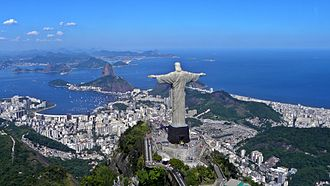

STATUE OF CHRIST THE REDEEMER

About Christ the Redeemer
Christ the Redeemer, colossal statue of Jesus Christ at the summit of Mount Corcovado, Rio de Janeiro, southeastern Brazil. Celebrated in traditional and popular songs, Corcovado towers over Rio de Janeiro, Brazil’s principal port city. The statue of Christ the Redeemer was completed in 1931 and stands 98 feet (30 metres) tall, its horizontally outstretched arms spanning 92 feet (28 metres). The statue has become emblematic of both the city of Rio de Janeiro and the whole nation of Brazil.
| Location: | Corcovado mountain, Rio de Janeiro, Brazil. |
| Designer: | Designed by sculptors Paul Landowski and Heitor da Silva Costa and built by engineer Heitor da Silva Costa in collaboration with Albert Caquot. Sculptor Gheorghe Leonida created the face |
| Material: | Reinforced concrete with soapstone veneer |
| Width: | 28 metres (92 ft) |
| Height: | 30 metres (98 ft), 38 metres (125 ft) with its pedestal |
| Completion date: | Dedicated October 13, 1931; 92 years ago Consecrated October 12, 2006. | Designated: | 2001 |
| Reference no.: | 1478 |

A panoramic view of the statue at the top of Corcovado Mountain with Sugarloaf Mountain (centre) and Guanabara Bay in the background.
FACTS ABOUT "CHRIST THE REDEEMER"
- Christ the Redeemer was built using reinforced concrete and has an outer shell of 6 million soapstone tiles. It’s believed that the workers who made these tiles occasionally wrote notes on the back, meaning this iconic landmark is full of hidden messages.
- Due to the statue’s mountaintop position, it’s prone to lightning strikes and gets hit around three to six times a year. Prior to the FIFA World Cup in 2014, lightning struck and broke one of the statue’s thumbs.
- The original design of the statue was different from what we see today. It was intended for Christ to be holding a globe in one hand and a cross in the other, rather than two open arms.
- Christ the Redeemer was not actually built in Brazil. It was first made in France by French sculptor Paul Landowski who created the statue in clay pieces. These were then shipped to Brazil to be remade with reinforced concrete by Brazilian engineer Heitor da Silva Costa and French engineer Albert Caquot.
- Construction of the statue took 9 years. Beginning in 1922, it was finally finished in 1931 at a cost of $250,000 US.
- The statue boasts an impressive title. In 2007 it was voted one of the New Seven Wonders of the World alongside top sights such as the Great Wall of China, Machu Picchu and the Rose City of Petra in Jordan.
- It’s one of the largest statues of Jesus and the tallest art deco statue in the world. Christ the Redeemer reaches a height of 30 metres and boasts an arm span of 28 metres.
- Housing prices in Rio de Janeiro have increased simply if the property has a view of Christ the Redeemer. Apartments with even a slight view of the statue are higher than those with the same location and size but no view.
- The light-coloured stone used to build the statue was taken from a quarry near the city of Ouro Preto. However, this stone is in short supply and restoration works are having to be done using different types. As a result, stone in a darker shade is slowly replacing the original, meaning Christ the Redeemer is gradually getting darker.
- Each year, Christ the Redeemer is visited by nearly 2 million people. The record number of visitors to the statue in a single day was a huge 14,000 during Easter of 2011.